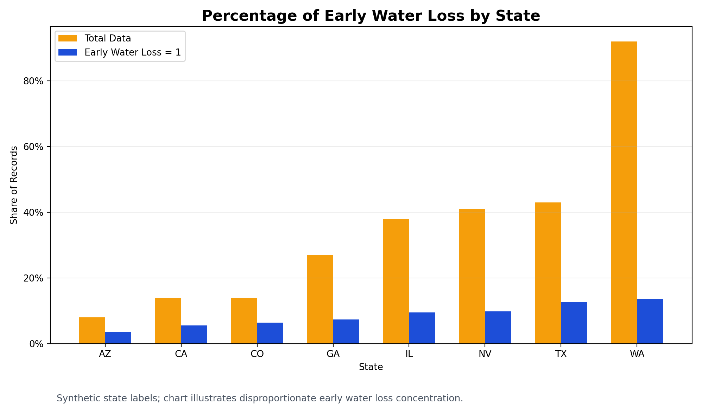
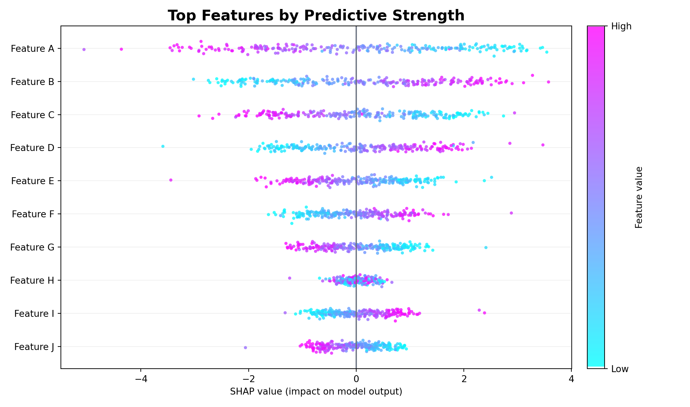
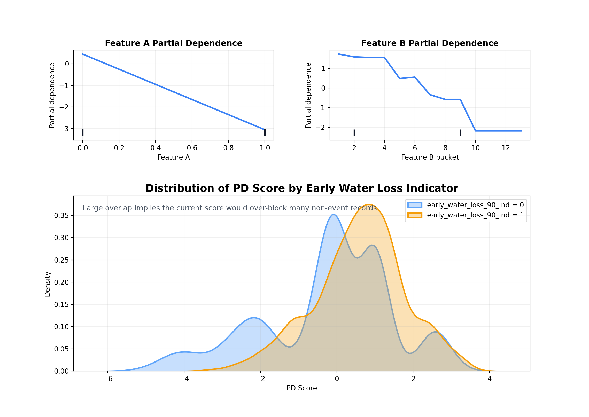
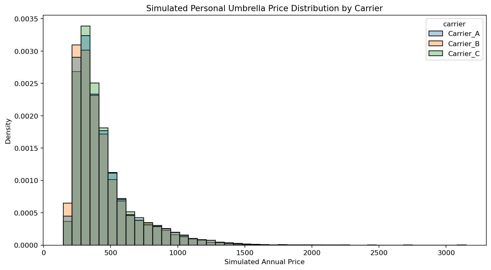
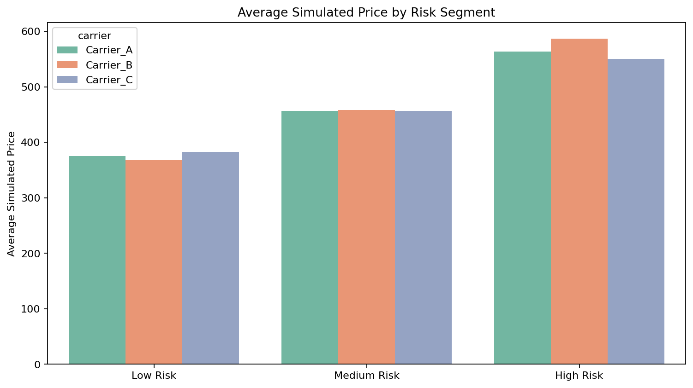
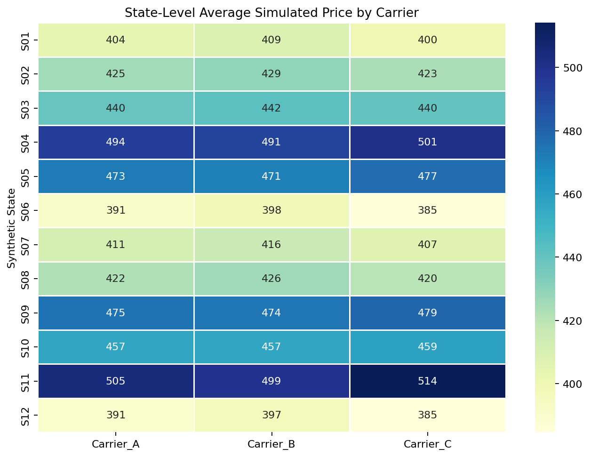

Product Analyst II · Personal insurance analytics
Builds SQL/Python monitoring workflows, product impact analyses, risk segmentation research, and decision-support dashboards for pricing, guideline, and performance monitoring.
I am an analytics professional focused on product analytics, monitoring dashboards, predictive modeling, and business-facing decision support. I like work that sits close to the question: what changed, why did it change, and what should the business do next?
Background
Builds SQL/Python monitoring workflows, product impact analyses, risk segmentation research, and decision-support dashboards for pricing, guideline, and performance monitoring.
Coursework included product management, customer analytics, competitive analytics, prescriptive models, and data analytics.
Bachelor of Arts with a Computer Science minor, combining quantitative modeling, economics, and programming fundamentals.
Projects
Featured analytics project
A thorough analytics application for monitoring comprehensive coverage performance across premium, claims, loss categories, geography, vehicle segments, sales channel, business type, catastrophe indicator, and monthly period.
Defines reusable metrics for loss ratio, claim frequency, severity, earned premium, on-level premium, and claim mix with synthetic credibility controls.
Ranks vehicle make/model, geography, channel, and business type to separate normal performance movement from concentrated adverse segments.
Converts dashboard outputs into concise stakeholder insights about theft mix, vehicle concentration, catastrophe effects, and monitoring priorities.


Applied machine learning project
A synthetic geospatial machine learning workflow that assigns location-tagged records to H3 hex grids, engineers neighborhood-based spatial features, trains a random forest classifier, and gates recommendations by prediction confidence for stakeholder review.

Machine learning research project
A rare-event modeling and segmentation study focused on identifying business segments associated with disproportionate early non-weather water losses. The workflow combined under-sampling, gradient boosting, SHAP-based driver analysis, and partial-dependence scoring to test whether model signals could translate into practical blocking recommendations.
Built subset-level gradient boosting models with under-sampling and parameter tuning to handle an extremely imbalanced early-loss target.
Used SHAP to identify features that persistently moved predictions as the early-loss window expanded from shorter to longer observation periods.
Converted top drivers into a partial-dependence scoring system, then stress-tested whether the score separated early-loss policies well enough to support blocking.
With more historical observations, the model can improve accuracy, reduce PD score overlap, and make future segmentation recommendations more reliable.



Pricing analytics project
A fully synthetic pricing simulation and benchmarking system that compares fictional personal umbrella carriers across customer profiles, coverage limits, risk segments, and synthetic geographies. The project turns profile-level simulations into competitive positioning diagnostics and executive-ready insights.
Generates 100,000 synthetic profiles with coverage limits, household structure, prior claims, geography, home value, credit band, and urban/rural context.
Simulates three fictional carriers with different risk, geography, and limit sensitivities, then ranks relative price position against a reference and market average.
Highlights segment gaps, geographic variation, coverage sensitivity, and pricing drivers so product teams can understand where competitive position changes most.



Capabilities
SQL data extraction, Python data manipulation, reusable metric layers, validation checks.
Metric design, segmentation, cohort-style comparisons, performance monitoring, stakeholder narratives.
Predictive modeling, risk segmentation, gradient boosting workflows, model validation, business framing.
Loss ratio monitoring, claim frequency, severity analysis, catastrophe-aware views, credibility filters.
Streamlit apps, Plotly charts, dashboard UX, parameterized workflows, GitHub portfolio packaging.
Contact
I am interested in analytics roles where business judgment, careful metrics, and clear communication matter.